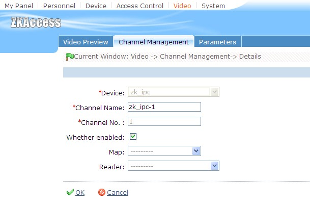
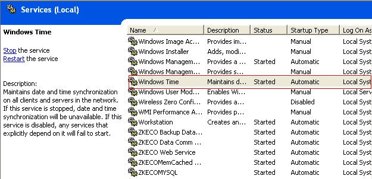
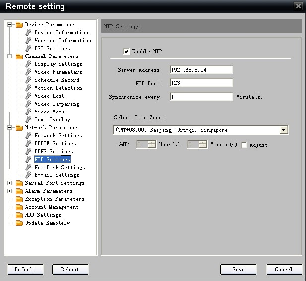

First of all need to video channel and the need to install linkage door binding, can be in door edit page setup door read head and video channel binding. For details, see "door management" help page. Also can be in the [channel management] binding video channel and gate read head.
Video channel management interface Settings video channel and gate read head binding process:
[video] - > the [channel management], and then choose to set and gate read head the binding of video channel edit, as below:

Video linkage setting method and the linkage of the door controller set, select the trigger condition and the input point address, in linkage Settings page select the corresponding video linkage action. Please refer to the entrance guard linkage Settings.
Time synchronization server (Timeserver) Settings:
Timeserver function mainly is to guarantee the video server and software server time synchronization, avoid the time is not synchronous affected related function.
Equipped with the software of computer, has Timeserver function, need to set up relevant information can use. Setting method is as follows:
1. The installation of the software on the server, the start system service Windows Time, and is set to automatically start type, as below:

2. Set video server NTP function, can be in video server directly Settings, also can through the browser access video server, in Web page setup. As the chart:

The diagram above "server address" is the software server IP address, "NTP port" default 123, no need to modify, "school time partition" suggest setting small (such as 1 minute school at a time), ensure that video server and software server time accurate synchronization. Save preferences, restart video server can.